_____________________________________________________________________________________________
Surrogate Model Extension (SME):
A Fast and Accurate Weight Update Attack on Federated Learning_____________________
Junyi Zhu 1 Ruicong Yao 2 Matthew B. Blaschko 1
In Federated Learning (FL) and many other distributed training frameworks, collaborators can hold their private data locally and only share the network weights trained with the local data after multiple iterations. Gradient inversion is a family of privacy attacks that recovers data from its generated gradients. Seemingly, FL can provide a degree of protection against gradient inversion attacks on weight updates, since the gradient of a single step is concealed by the accumulation of gradients over multiple local iterations. In this work, we propose a principled way to extend gradient inversion attacks to weight updates in FL, thereby better exposing weaknesses in the presumed privacy protection inherent in FL. In particular, we propose a surrogate model method based on the characteristic of two-dimensional gradient flow and low-rank property of local updates. Our method largely boosts the ability of gradient inversion attacks on weight updates containing many iterations and achieves state-of-the-art (SOTA) performance. Additionally, our method runs up to \(100\times \) faster than the SOTA baseline in the common FL scenario. Our work re-evaluates and highlights the privacy risk of sharing network weights. Our code is available at https://github.com/JunyiZhu-AI/surrogate_model_extension.
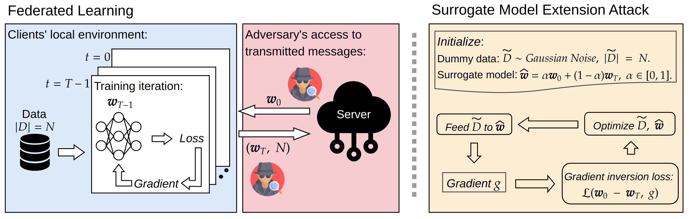
where \(\lambda \) is a hyperparameter tuning the strength of the prior.
Later, we will use \(\mathcal {L}_{sim}\) to denote the cosine similarity loss.
IG has been proven to be more stable and efficient than DLG in
practice, and its objective is relatively simple and general. In
this work, we will use the image reconstruction attack as a
proof of concept and rely on the reconstruction loss defined in
Equation (1). Our method SME focuses on adapting the core
term in Equation (1), i.e. the gradient similarity loss \(\mathcal {L}_{sim}\), to the
weight update of many iterations.
3.2. Communication
in
Federated
Learning
In this work we consider a classical FL framework: Federated
Averaging (FedAvg) (McMahan et al., 2017). The procedure
of FedAvg is given in Algorithm 2 in Section D. For each
communication round in FedAvg, clients train the local model
for \(E\) epochs before sending back the optimized weights. While
for each epoch, the network will be updated for \(\lceil N/B \rceil \) steps, where \(B\) is
the batch size and \(N\) is the local data size. Generally, \(B\) is fixed by
the training protocol and \(N\) depends on how much data a client
can collect.
Therefore, for one round of communication, the network
weights that could be intercepted by an adversary at the
communication channel side, or observed by the server,
are \(\bm w_0\) and \(\bm w_T\). The weight update \(\bm w_T - \bm w_0\) accumulates \(T = E\lceil N/B \rceil \) local steps of
gradient descent, thus the gradient of every single step is
obfuscated.
Weight updates of multiple steps can still be plugged into the
reconstruction loss of gradient inversion (Wei et al., 2020; Geng
et al., 2021). Such technologies usually normalize the reversed
weight update of \(T\) steps, i.e. \((\bm w_0 - \bm w_T)/\eta T\), where \(\eta \) is the learning rate. Then
they take the normalized gradient as an approximation of the
gradient of the local data set \(D\) computed on \(\bm w_0\), i.e. \(\nabla _{\bm w_0} \ell (\bm w_0, D)\), and
apply gradient inversion to reconstruct the local data set
\(D\). However, as the number of local steps \(T\) increases, the
normalized gradient incrementally mismatches the gradient at
\(\bm w_0\), which induces intrinsic objective error defined as the
cosine similarity loss with the optimal reconstruction \(\Tilde {D} = D\):
since \(1-\mathcal {L}_{sim}\) is a cosine similarity, it is invariant to the rescaling \(1/\eta T\). As
a result, when the direction of weight updates deviates
from \(\nabla _{\bm w_0} \ell (\bm w_0, D)\), this error increases. It has been observed that the
reconstruction quality of gradient inversion degrades with
the number of local steps \(T\) (Wei et al., 2020; Dimitrov
et al., 2022).
3.3. Inverting
Weight
Updates
through
Simulation
An existing privacy attack targeting weight updates is the
simulation method, for which Data Leakage from Federated
Averaging (DLFA) achieves SOTA performance in terms of the
reconstruction quality (Dimitrov et al., 2022). Simulation
methods reconstruct data by fitting internal states of the local
training. That is, the adversary mimics the local training steps
by optimizing \(\bm w_0\) with dummy data \(\Tilde {D}\) and obtains dummy weights \(\{\tilde {\bm w}_t\}_{t=1}^T\).
Then the adversary minimizes the difference between the
weight updates, i.e. \(\Tilde {\bm w}_T - \bm w_0 \) and \(\bm w_T - \bm w_0\). The simulation loss \(\mathcal {L}\) can thus be
defined as:
where we define \(\nabla \bm w = \nabla _{\bm w}\ell (\bm w, \tilde {D})\). The Euclidean distance can also be replaced by a cosine similarity loss. Simulation methods circumvent the intrinsic objective error of the gradient inversion. However, a major issue of the simulation methods is their computational complexity. Consider a simulation for only two local steps, the reconstruction gradient w.r.t. the dummy data can be derived as:1
A full derivation of \(\nabla _{\Tilde {D}}\mathcal {L}\) for \(T\) local steps is deferred to Section B.
According to Equation (4), we can see that the reconstruction
gradient \(\nabla _{\Tilde {D}} \mathcal {L}\) of simulation methods has a complicated form, which
involves the computation of multiple second-order derivatives
and their products. When there are many local steps, a long
chain of forward and backward propagation will be induced,
which leads to very large computational overhead and memory
footprint.
4. Inverting
Weight
Updates
through
a
Surrogate
Model
In this section, we elaborate on our surrogate model extension
SME. Denote \(\widehat {\bm w}\) as the surrogate model, we give the general
objective of surrogate model extension attack:
When we fix \(\widehat {\bm w}\) to \(\bm w_0\), this objective reverts to the vanilla gradient
inversion and contains an intrinsic objective error as shown
in Equation (2). It is worth noting that \(\widehat {\bm w}\) generally has
many more parameters than \(\Tilde {D}\). If we do not constrain the
feasible set \(\mathcal {W}\), this objective still cannot give us a good
reconstruction.
Our key insight is that the linear combinations of \(\bm w_0\) and \(\bm w_T\) is a good
choice of \(\mathcal {W}\), i.e. \(\mathcal {W} = \{\alpha \bm w_0 + (1-\alpha )\bm w_T\mid \alpha \in [0,1]\}\). We identify that if the parameter space is
two-dimensional (2D), then there exists a \(\widehat {\bm w}\) on the connected line
between \(\bm w_0\) and \(\bm w_T\), such that \(\nabla _{\widehat {\bm w}}\ell (\widehat {\bm w}, D)\) is parallel to \(\bm w_0 - \bm w_T\), denoted as \(\nabla _{\widehat {\bm w}}\ell (\widehat {\bm w}, D) \parallel \bm w_0 - \bm w_T\). Thus
a minimizer \(\widehat {\bm w}\) corresponding to the original data \(D\) can be
found on the connected line, which leads to \(\mathcal {L}_{sim}(\bm w_0-\bm w_T, \nabla _{\widehat {\bm w}}\ell (\widehat {\bm w}, D)) = 0\). To keep the
notation uncluttered, we will slightly abuse \(\nabla \w \) and denote
\(\nabla \w := \nabla \ell (\w , D)\).
For a general high-dimensional parameter space, we further
observe that the local update steps of a network basically transit
within a low-dimensional subspace due to the low-rank
property of the gradients. Therefore, for a high-dimensional
network, it is still possible to find a surrogate model \(\widehat {\bm w}\) as a linear
combination of \(\bm w_0\) and \(\bm w_T\), such that the direction of \(\nabla \widehat {\bm w}\) and \(\bm w_0 - \bm w_T\) are
close. The low-rank property of gradients has also been
observed and utilized by a wide range of works (Vogels
et al., 2019; Gooneratne et al., 2020; Li et al., 2020; Zhou
et al., 2021; Li et al., 2022). Additionally, as we can
reparamterize the surrogate model with only a scalar \(\alpha \),
simultaneously optimizing the reconstructed data \(\Tilde {D}\) and the
surrogate model \(\widehat {\bm w}\) becomes tractable. After incorporating the
image prior TV, we define the reconstruction loss \(\mathcal {L}\) of our SME
as:
Next, in Section 4.1 we first prove that for a 2D parameter space, there exists a minimizer of \(\hw \) for the original data on the connected line between the starting point \(\bm w_0\) and end point \(\bm w_T\) of gradient flow (gradient descent (GD) with infinitesimal step sizes). Then in Section 4.2, we extend our analysis to more general cases. Finally, in Section 4.3 we present the implementation of our surrogate model extension. All proofs are deferred to Section C. 4.1. Gradient Flow in a 2-Dimensional Parameter Space Figure 2 illustrates a gradient flow in a quadratic model and motivates our surrogate model extension. The key observation from this figure is that the gradient \(\nabla \bm w_0\) points to the right hand side of \(\bm w_T-\bm w_0\), while \(\nabla \bm w_T\) points to the other side. Since the gradient is continuous, a surrogate model whose gradient is parallel to \(\bm w_T-\bm w_0\) must exist. Although other configurations of the gradient flow exist, we can prove the following proposition holds generally:
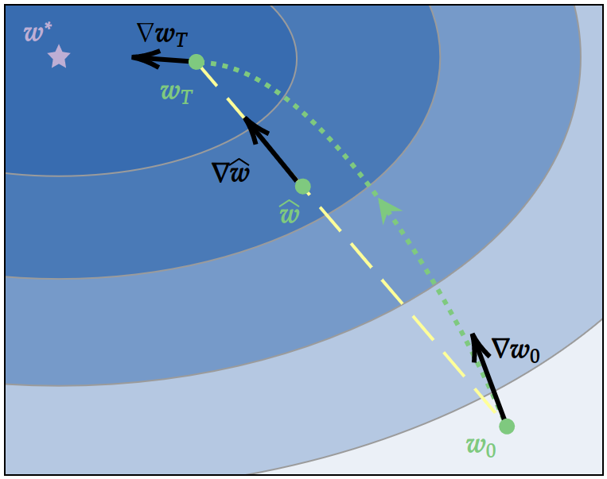
4.2. Cosine Similarity between the High-Dimensional Surrogate Gradient and Weight Update In the 2D gradient flow case, it has been shown that there exists a value of \(\alpha \) that achieves a cosine similarity of exactly 1. This may fail in higher dimensional spaces. Consider a gradient flow in \(\mathbb R^3\) parameterized by \((\cos t-1, \sin t, t)\), \(t\in \mathbb R\), such that the origin is the starting point and \((0,0,2\pi )\) is the end point. We further assume that the gradient field in \(\mathbb R^3\) is parameterized by \((\cos t-1-s, \sin t-r, t)\), \(r,s,t\in \mathbb R\) (which is reasonable since the gradient flows can be similar to each other locally). Then we know that the gradient of the weights on the connected line would be \((-\sin t, \cos t, 1)\). This indicates that their cosine similarity with \((0,0,2\pi )\) would always be \(1/\sqrt {2}\) which deviates from 1. However, in the above artificial example, the gradient flow curls in three dimensions. In practice, we observe that there exists a 2D subspace that absorbs a majority of the magnitude of the gradients of local steps. Using this low-rank property of the local steps, we show that there exists a surrogate model \(\widehat {\bm w}\) on the connected line, s.t. \(\mathcal {L}_{sim}(\bm w_0 - \bm w_T, \nabla \widehat \w )\approx 0\), where \(1-\mathcal {L}_{sim}\) is known as the cosine similarity. Additionally, we consider (stochastic) gradient descent with step size \(\eta \). Our assumption and first result are:
In the following, the gradient flow path is denoted as \(\w (t),t\in \mathbb R^+\) to be distinguished with the GD path \(\{\w _t\}_{t=1}^T\) with step size \(\eta \). In addition, we assume that it satisfies:
up to a \(\Delta _{trun}\) (see Equation (26)) due to discretization.
The proof is based on the identity \(\langle \nabla \widehat \w ,\bm w_0-\bm w_T \rangle = \langle P_2\nabla \widehat \w ,P_2(\bm w_0-\bm w_T) \rangle +\langle P_2^\perp \nabla \widehat \w ,P_2^\perp (\bm w_0-\bm w_T) \rangle \) (\(P_2^\perp \) is the projection onto \(V_2^\perp \)) which allows us to estimate the quantity \(\mathcal {L}_{sim}\) on two orthogonal subspaces. Here \(\Delta _{trun}\) stems from the discretization (gradient flow to gradient descent path). The idea in the proof of Theorem 4.5 also adapts to its estimation and we argue that \(\Delta _{trun}\) is negligible as long as GD approximates the gradient flow well, see Section C.2. Thus we omit it in Theorem 4.5 for brevity.
For SGD, again we first deal with the 2D case. Since a fully random path does not have the property we want, we assume that the magnitude of the gradient noise is moderate so that we can approximate SGD \(\{\w _t\}_{t=0}^T\) by GD \(\{\w _t'\}_{t=0}^T\). We first show that with high probability, the angle \(\theta _1\) between \(\w _T-\w _0 \) and \(\w _T'-\w _0\) is small. Then we can find a surrogate model \(\widehat \w '\) on the connected line between \(\bm w_0\) and \(\bm w_T'\) by Proposition 4.1. We then try to locate a surrogate model \(\widehat \w \) on the connected line between \(\w _0\) and \(\w _T\) such that the angle \(\theta _2\) between \(\nabla \widehat \w \) and \(\nabla \widehat \w '\) is small. This is done by upper bounding \(||\nabla \widehat \w -\nabla \widehat \w '||\) and lower bounding \(||\nabla \widehat \w '||\), where we use strong convexity. For high-dimensional spaces, we use the aforementioned identity and show that \(||P_2^\perp (\bm w_T-\bm w_0)||/||\bm w_T-\bm w_0||\) is small. Thus the weight update is mainly in \(V_2\), and \(\mathcal {L}_{sim}\) would be similar to the 2D case. The final result is summarized in the following theorem:
Let \(C_{\eta }=\frac {1}{1-\sqrt {\eta }}\). Then with probability at least \(1-3T\exp (-r)\) there exists a surrogate model \(\widehat \w \) on the connected line between \(\w _0\) and \(\w _T\):
where \(\w ^*\) is the global minimum.
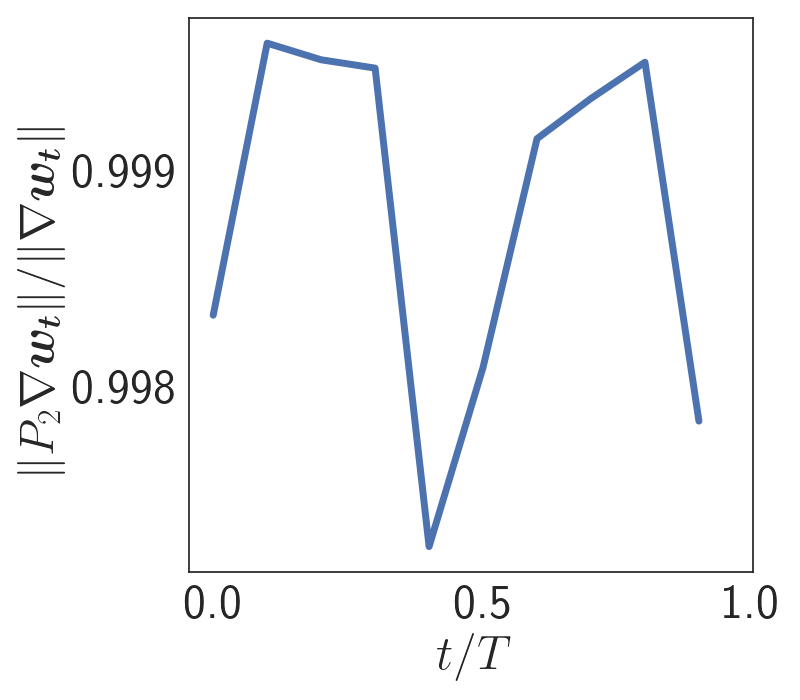
(a) \(E\)=10, \(B\)=50, \(R\)=1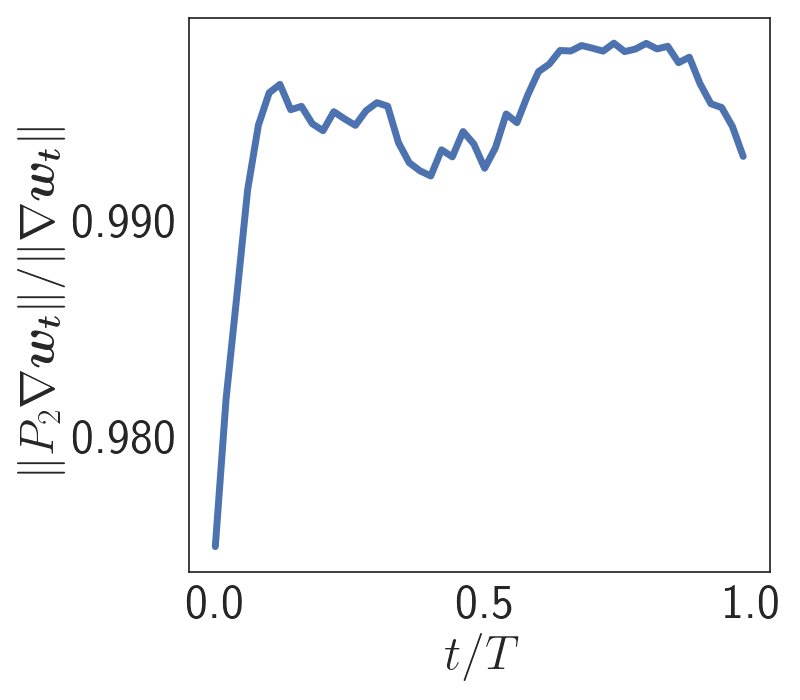
(b) \(E\)=50, \(B\)=50, \(R\)=1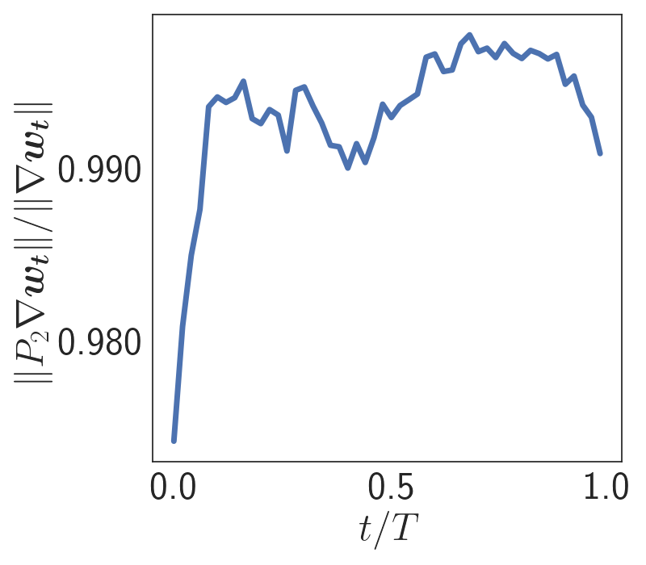
(c) \(E\)=10, \(B\)=10, \(R\)=1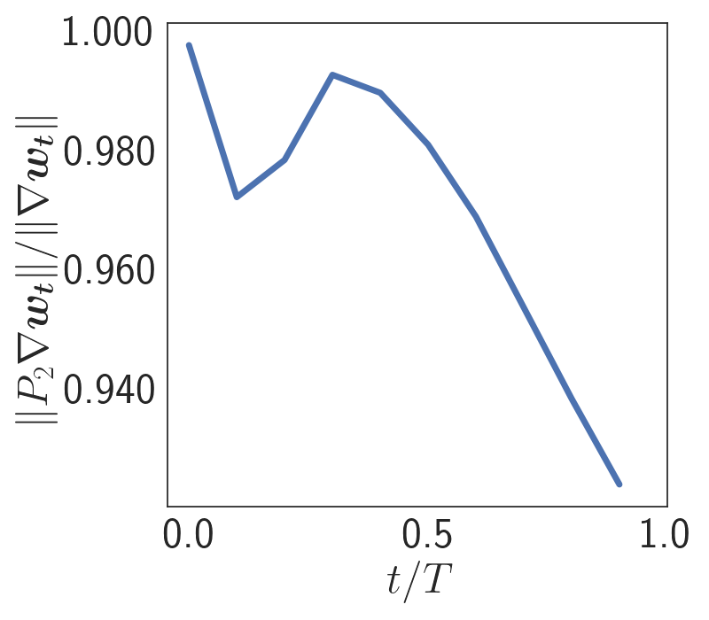
(d) \(E\)=10, \(B\)=50, \(R\)=20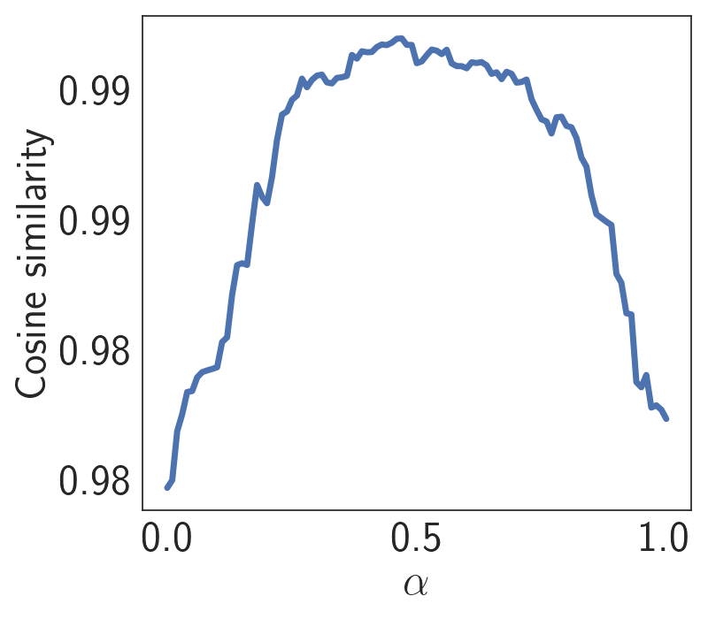
(a) \(E\)=10, \(B\)=50, \(R\)=1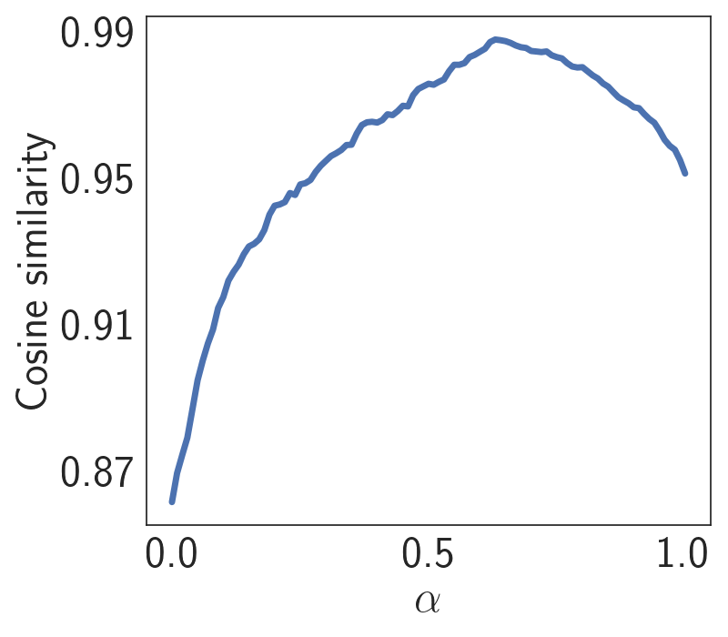
(b) \(E\)=50, \(B\)=50, \(R\)=1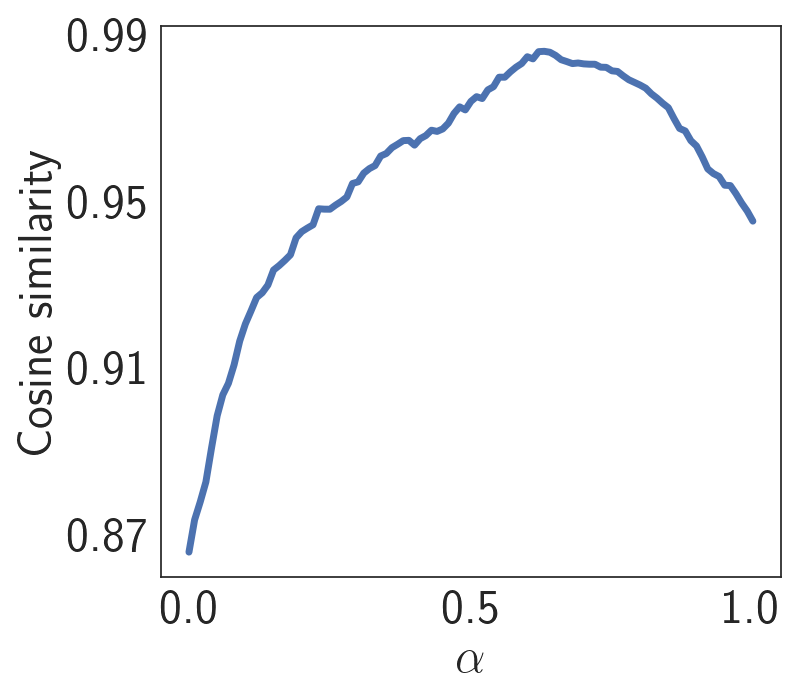
(c) \(E\)=10, \(B\)=10, \(R\)=1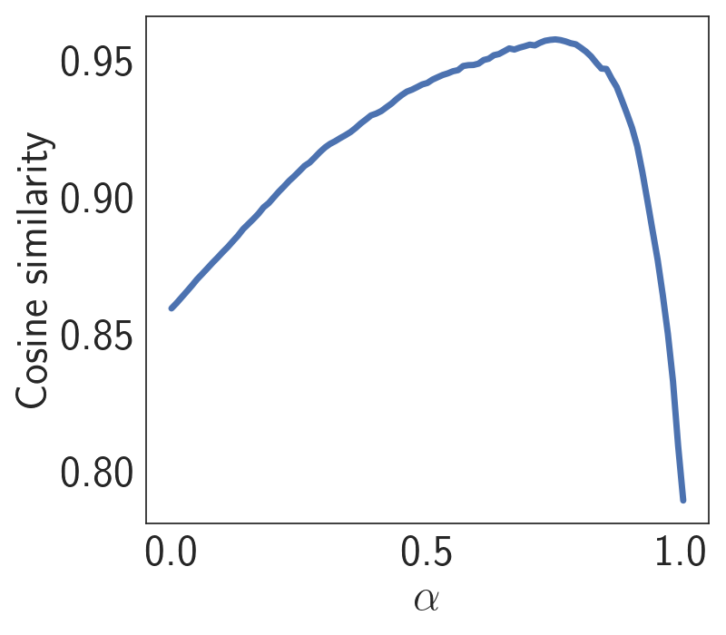
(d) \(E\)=10, \(B\)=50, \(R\)=20
4.3. Implementation
of
the
Surrogate
Model
Extension
Our method SME is easy to implement. Based on the objective
of SME in Equation (6), in addition to the gradient inversion
steps, we only need to update the surrogate model’s weights
w.r.t. \(\alpha \) before the forward propagation and optimize \(\alpha \) after the
backward propagation. Algorithm 1 presents the optimization
steps of our approach.
It is worth emphasizing that the additional computation caused
by SME due to the optimization of \(\alpha \) is negligible. Since
reconstruction loss \(\mathcal {L}\) only depends on \(\alpha \) through \(\hw \) due to \(\hw = \alpha \bm w_0 + (1-\alpha )\bm w_T\), we have:
which is simply an inner product of the gradient and weight
update. Compared with the simulation methods as discussed in
Section 3.3, SME is expected to run much faster.
5. Experiments
In this section, we present empirical evidence for our analysis
and validate the performance of our method SME. We compare
SME with the vanilla gradient inversion method IG (Geiping
et al., 2020), which our extension is based on, and the
simulation method DLFA (Dimitrov et al., 2022), which
achieves the current SOTA weight update attack.
Setup: We conduct our experiments on two image classification
datasets: FEMNIST (Cohen et al., 2017; Caldas et al., 2018)
and CIFAR100 (Krizhevsky, 2012), and investigate the
influence of local training for different attack approaches
w.r.t. different numbers of epochs \(E\), batch sizes \(B\), and local data
size \(N\). In particular, we mainly investigate the privacy risk of
small clients with \(N\leq 50\). No existing reconstruction attack recovers
large data sizes (e.g. a few hundred). On the other hand, small
clients, e.g. edge devices, are common in FL and may
have lower amounts of data. We also evaluate on larger \(N\) to
demonstrate the superiority of our method in a broad range of
scenarios. Additionally, we consider clients joining the FL
group at different communication rounds \(R\), such that the
received network \(\w _0\) is at different training stages. Following
Dimitrov et al. (2022) we conduct attacks on two CNNs
for the respective datasets. The networks consist of two
convolutional layers followed by two fully-connected layers.
We also provide results on other architectures in Section G. A
detailed description of the datasets, federated learning, and
hyperparameters for different attack approaches is given in
Section D.
| (E=10, B=50, R=1) | (E=50, B=50, R=1) | (E=10, B=10, R=1) | (E=10, B=50, R=20) | |
| _______________ | _______________ | _______________ | ________________ | |
| \(\maE [\min _t \frac {\|P_2\nabla \bm w_t\|}{\|\bm w_t\|}]\) | .996\(\pm \).002 | .977\(\pm \).009 | .977\(\pm \).008 | .960\(\pm \).033 |
| \(\maE [\Cosim |\alpha =0]\) | .984\(\pm \).008 | .867\(\pm \).041 | .872\(\pm \).037 | .825\(\pm \).055 |
| \(\maE [\max _{\alpha \in [0,1]}\Cosim ]\) | .997\(\pm \).002 | .980\(\pm \).007 | .979\(\pm \).007 | .973\(\pm \).016 |
|
Dataset | DLFA | IG | SME (ours) | |||||||
| _____ | ________ | __ | ______ | __ | ________ | _______ | ||||
| \(E\) | \(N\) | \(T\) | \(\mathcal {L}_{sim}\downarrow \) | PSNR \(\uparrow \) | \(\mathcal {L}_{sim}\downarrow \) | PSNR \(\uparrow \) | \(\mathcal {L}_{sim}\downarrow \) | PSNR \(\uparrow \) | \(\bm \Delta \) PSNR | |
|
FEMNIST | 10 | 10 | 10 | \(.021\pm .001\) | \(24.9\pm 0.2\) | \(.044\pm .002\) | \(27.8\pm 0.3\) | \(.019\pm .001\) | 30.3 \(\pm \) 0.3 | \(+2.5\) |
| 20 | 10 | 20 | \(.019\pm .001\) | \(25.4\pm 0.2\) | \(.090\pm .003\) | \(24.2\pm 0.3\) | \(.019\pm .001\) | 28.6 \(\pm \) 0.3 | \(+3.2\) | |
| 50 | 10 | 50 | \(.016\pm .002\) | 26.4 \(\pm \) 0.3 | \(.202\pm .005\) | \(19.5\pm 0.2\) | \(.050\pm .004\) | \(25.7\pm 0.3\) | \(-0.7\) | |
| 10 | 50 | 50 | \(.015\pm .001\) | \(21.7\pm 0.1\) | \(.091\pm .003\) | \(19.1\pm 0.2\) | \(.027\pm .001\) | 22.2 \(\pm \) 0.2 | \(+0.5\) | |
| 20 | 50 | 100 | \(.014\pm .001\) | 21.7 \(\pm \) 0.2 | \(.176\pm .011\) | \(17.0\pm 0.2\) | \(.037\pm .001\) | \(21.5\pm 0.2\) | \(-0.2\) | |
| 50 | 50 | 250 | \(.015\pm .001\) | 20.3 \(\pm \) 0.2 | \(.322\pm .016\) | \(15.0\pm 0.1\) | \(.065\pm .002\) | \(20.1\pm 0.2\) | \(-0.2\) | |
|
CIFAR100 | 10 | 10 | 10 | \(.017\pm .001\) | \(26.7\pm 0.2\) | \(.050\pm .001\) | \(26.0\pm 0.1\) | \(.024\pm .001\) | 28.5 \(\pm \) 0.1 | \(+1.8\) |
| 20 | 10 | 20 | \(.013\pm .000\) | \(26.0\pm 0.2\) | \(.102\pm .001\) | \(22.3\pm 0.1\) | \(.040\pm .001\) | 26.9 \(\pm \) 0.1 | \(+0.9\) | |
| 50 | 10 | 50 | \(.011\pm .000\) | 24.3 \(\pm \) 0.2 | \(.225\pm .002\) | \(16.4\pm 0.2\) | \(.056\pm .001\) | \(24.2\pm 0.1\) | \(-0.1\) | |
| 10 | 50 | 50 | \(.023\pm .001\) | \(20.3\pm 0.1\) | \(.094\pm .001\) | \(17.9\pm 0.1\) | \(.035\pm .000\) | 23.5 \(\pm \) 0.1 | \(+3.2\) | |
| 20 | 50 | 100 | \(.018\pm .000\) | \(19.5\pm 0.1\) | \(.154\pm .002\) | \(14.8\pm 0.1\) | \(.047\pm .001\) | 21.7 \(\pm \) 0.1 | \(+2.2\) | |
| 50 | 50 | 250 | N/A | N/A | \(.280\pm .002\) | \(12.1\pm 0.0\) | \(.056\pm .001\) | 18.3 \(\pm \) 0.1 | N/A | |
Threat Model: To implement our method SME and the
gradient inversion method IG, the adversary only needs to
know the model weights \(\bm w_0\), \(\bm w_T\) of a victim, and its local data size \(N\).
We note that clients in FL also need to transmit \(N\) to the
server due to weighted aggregation (Line 8, Algorithm 2).
Therefore, any adversary intercepting the messages or an
honest-and-curious server has the ingredients to conduct SME
and IG. Whereas, DLFA also needs to know the number of
epochs \(E\), batch size \(B\), and learning rate \(\eta \), so that the simulation
can be implemented. This may limit the adversary to the
server, which has knowledge of the training protocol. In our
comparison experiment, we still grant DLFA this additional
required information.
5.1. Low-Rank
Property
of
Local
Steps
In Section 4.2 we show that if the magnitude of high-dimensional
gradient mostly concentrates on a 2D plane \(V_2\) then we are able to
find a proper surrogate model \(\hw \) on the connected line between \(\bm w_0\)
and \(\bm w_T\) achieving high cosine similarity between \(\nabla \hw \) and \(\w _0 - \w _T\). To
support Assumption 4.2 empirically, we collect the true
gradients of the local training steps \(\{\nabla \bm w_t\}_{t=0}^{T-1}\) and compute the two
principal components with the largest two singular values.
We let \(P_2\) consist of these two principal components. Then
we project the gradients \(\{\nabla \bm w_t\}_{t=0}^{T-1}\) onto \(V_2\) using \(P_2\) and compute the norm ratio \(\{\|P_2\nabla \bm w_t\|/\|\nabla \bm w_t\|\}_{t=0}^{T-1}\). Furthermore, we measure the cosine similarity
between the connected line \(\bm w_0 - \bm w_T\) and surrogate gradient \(\nabla \widehat {\bm w}\) along the
line.
We sample \(N = 50\) data points from FEMNIST and investigate
different training situations in terms of epochs \(E\), batch
size \(B\), and communication rounds \(R\). Figure 3 shows that in
different situations, more than 0.9 of the gradient magnitude
concentrates on \(V_2\). This implies that the low-rank property
generally holds for the local updates of small clients in FL.
Figure 4 shows that there exists a \(\nabla \widehat {\bm w}\) with much higher cosine
similarity than \(\nabla \bm w_0\) some where in the middle of the connected
line, while the cosine similarity is always positive for
any \(\nabla \hw \). Especially, we observe that the cosine similarity
along \(\alpha \) has a reversed U-shape which indicates that it is
adequate to use an optimization method to find the best \(\alpha \).
Statistical evaluations of multiple samplings are presented in
Table 1. We give more results of other settings in Section E.
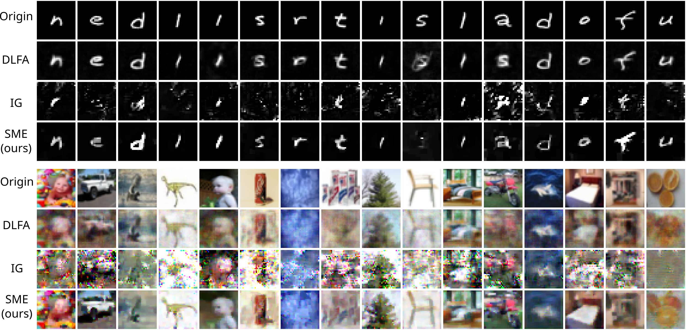
5.2. Reconstruction Performance In this part, we compare the quality of the reconstructed data across different approaches. In previous works, it has been proposed that the label information can be independently recovered with high accuracy by inspecting the weight update of the last linear classifier layer (Zhao et al., 2020; Geng et al., 2021; Dimitrov et al., 2022). Thus, we assume the labels have been recovered, and compare the reconstructed images, which is arguably the primary interest of the adversary. To measure the quality of the reconstructed images, we use the Peak Signal-to-Noise Ratio (PSNR). As the reconstructed images may have a different ordering from the original images, linear sum assignment is used to find the optimal pairing before computing PSNR. We also present the cosine similarity loss \(\mathcal {L}_{sim}\) between the original weight update and dummy gradient (or dummy weight update). For clarity, we set batch size \(B = 10\) and conduct experiments with different epochs \(E\in \{10, 20, 50\}\) and local data size \(N\in \{10, 50\}\), such that when \(N=10\) the full gradient is used, and when \(N=50\) stochastic mini-batch gradient is computed. We execute attacks at the first communication round of FL when the network is randomly initialized. We also investigate the attacks at other training stages in Section F. For each setting, we run 100 experiments, then compute the mean and standard error of PSNR and \(\mathcal {L}_{sim}\).
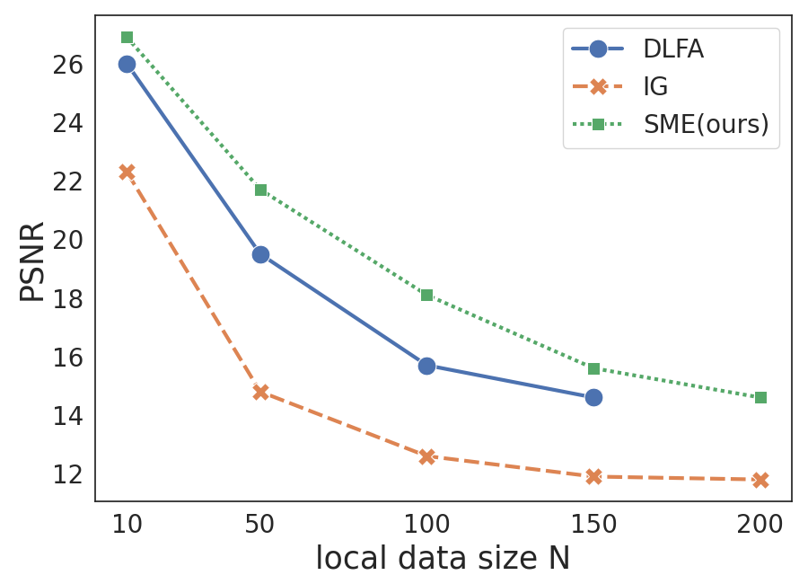
Based on Table 2, we observe that: (i) Compared with the base
method IG, our method SME achieves significantly lower
similarity loss \(\mathcal {L}_{sim}\). As a result, SME improves the reconstruction
quality measured with PSNR by a large margin. The benefit of
SME is consistent across different settings, which proves that
SME is an efficient and robust extension to the gradient
inversion method in attacking weight update of many iterations;
(ii) Compared with DLFA, our SME obtains competitive results
and outperforms DLFA in several settings. Additionally, we
note that DLFA usually achieves lower \(\mathcal {L}_{sim}\) than SME, even with
lower reconstruction quality. This may indicate that there are
multiple possible transitions from \(\bm w_0\) to \(\bm w_T\) with different data.
Fitting weight updates with simulation does not necessarily
reconstruct the original data.
Figure 5 shows the reconstruction samples of the setting (\(E=20\), \(N=50\), \(T=100\)).
As we can see, IG fails in reconstruction when there are
100 local steps, as the main features of the images are
corrupted and the reconstruction contains many artifacts.
Whereas, our SME revives the gradient inversion method and
delivers high-quality reconstruction which is competitive to
or better than DLFA. We provide more visualizations in
Section H.
|
Dataset | DLFA | IG | SME (ours) | Ratio
| ||||||
| ______ | _____ | ______ | _____ | ______ | ______ | ______ | ______ | |||
| \(E\) | \(T\) | Mem. | Time | Mem. | Time | Mem. | Time | Mem. | Time | |
|
FEMNIST | 10 | 50 | 2.1 | 5.9 | 1.8 | .29 | 1.8 | .29 | \(1.2\times \) | \(20\times \) |
| 20 | 100 | 2.4 | 11.8 | 1.8 | .29 | 1.8 | .29 | \(1.3\times \) | \(41\times \) | |
| 50 | 100 | 3.9 | 30.1 | 1.8 | .29 | 1.8 | .29 | \(2.2\times \) | \(103\times \) | |
|
CIFAR100 | 10 | 50 | 11.1 | 33.2 | 2.8 | 1.6 | 2.8 | 1.6 | \(7\times \) | \(21\times \) |
| 20 | 100 | 29.9 | 67.6 | 2.8 | 1.6 | 2.8 | 1.6 | \(19\times \) | \(42\times \) | |
| 50 | 250 | \(102^*\) | N/A | 2.8 | 1.6 | 2.8 | 1.6 | \(64\times \) | N/A | |
To evaluate the effectiveness of SME on larger local dataset, we
conduct experiments with \(N\) up to 200. Figure 6 shows
that: (i) as N increases, the reconstruction of all methods
becomes worse as the search space expands. (ii) SME
consistently improves over the vanilla gradient inversion
method and obtains better results compared to the SOTA
baseline DLFA.
5.3. Computational
Efficiency
As discussed in Section 3.3, the algorithm of DLFA demands a
large amount of computational resources as the number of local
steps increases, while both SME and IG do not involve a long
chain of simulation. We also show in Section 4.3 that the cost
of optimizing the surrogate model in SME is negligible. To
demonstrate this empirically, we present the runtime and
memory footprint of different approaches. The results are
shown in Table 3. We see both SME and IG have a consistent
and small runtime across different settings. In particular, our
method SME achieves the SOTA performance on reconstruction
while running up to \(100\times \) faster than the SOTA baseline DLFA.
We remark that the runtime of SME is nearly the same as
IG. More precisely, the increase due to surrogate model
optimization is less than \(1\%\) of the cost. Additionally, SME and IG
both have moderate and consistent (w.r.t. local steps \(T\))
memory footprint. While GPU memory allocated by DLFA
increases dramatically when the dimension of data grows
or the number of local steps increases. This demand of
DLFA may limit its application to some simple tasks. In contrast, SME is applicable on typical hardware and achieves
the SOTA performance while running up to \(100\times \) faster than
DLFA, which shows the potential to launch large-scale
attacks.
6. Discussion
and
Conclusion
In this work, we propose a surrogate model extension for
gradient inversion. Our method is based on our key insights of
the characteristic of 2D gradient flow and the low-rank
property of local training steps. We analyze our method
theoretically and empirically verify that our method largely
strengthens the ability of gradient inversion in attacking weight
updates of many training iterations. Compared with the
SOTA baseline DLFA, our method SME achieves the SOTA
performance of reconstruction while running up to \(100\times \) faster
and demanding less GPU memory. These indicate that
adversaries can in fact launch effective attacks using low-end
devices.
Limitations and Future Work. In this work, we consider that
federated optimization is performed with a standard SGD
optimizer. Some adaptive optimizer, e.g. Adam (Kingma &
Ba, 2014), may lead to different optimization properties and
thus interfere with SME. This needs further investigation. On
the other side, incorporating a more informative prior may
empower SME to reconstruct larger datasets or input, which has
succeeded in vanilla gradient inversion scenarios (Yin
et al., 2021; Jeon et al., 2021). Moreover, rather than
interpolation of \(\w _0\) and \(\w _T\), there may exist other construction
of \(\mathcal {W}\) that makes the general objective of SME effective,
i.e. Equation (5). We encourage further study in these
directions.
Societal Impact. We believe our effort in studying adversarial
attack and presenting it to the open community is beneficial to
society. We emphasize that our study does not attempt
to claim that federated learning is completely insecure,
since it certainly provides a layer of privacy protection
by avoiding data collection. Instead, our work intends
to evaluate the true risk hiding in the weight sharing in
collaborative learning schemes. We hope our research
will motivate further research of defense against privacy
attacks.
Acknowledgements. This research received funding from the
Flemish Government (AI Research Program) and the Research
Foundation - Flanders (FWO) through project number
G0G2921N. Ruicong Yao would like to thank the guidance and
encouragement from Tim Verdonck and Jakob Raymaekers in
this research process.
the reconstruction gradient \(\nabla _{\Tilde {D}}\mathcal {L}\) can be derived as:
Using the chain rule, we have for \(\frac {\partial \nabla \Tilde {\bm w}_1}{\partial \Tilde {D}}\):
where Equation (15) uses the fact that \(\Tilde {\bm w}_1 = \bm w_0 - \eta \nabla \bm w_0\). Then for the reconstruction gradient led by \(\nabla \bm w_t\), considering that \(\Tilde {\bm w}_t = \bm w_0 - \eta (\nabla \bm w_0 + \dots + \nabla \Tilde {\bm w}_{t-1})\), we have:
Substituting Equation (16) into Equation (14) for each \(t=1\dots T-1\) and rearranging, we have:
Equation (17) shows that the reconstruction gradient \(\nabla _{\Tilde {D}}\mathcal {L}\) in the simulation method has a complexity that increases with the number of local steps \(T\). C. Proofs In this section we give the proofs of all the theoretical results in Section 4. Recall Assumption 4.2 in Section 4, we say a function \(\ell (\w ):\mathbb R^{p}\rightarrow \mathbb R^{q}\) is \(L\)-Lipschitz if for \(\forall \w , \bm v\in \mathbb R^p\), it holds that
We say a function \(\ell :\mathbb R^p\rightarrow \mathbb R\) is \(\gamma \)-strongly convex if for \(\forall \w , \bm v\in \mathbb R^p\), it holds that,
A well-known property of strongly convex functions is that (cf. (Bottou et al., 2018)) for \(\forall \w \in \mathbb R^p\) and global minimum \(\w ^*\), it holds that
C.1. Proof of Proposition 4.1 The basic idea has been given in Section 4.1. Here, we further illustrate how we prove the case when both \(\nw _0,\nw _T\) point to the right hand side in Figure 1. Since \(\bm w_T\) is the end point of the gradient flow, we can argue that there exists a model \(\bm w_{t'}\) on the gradient flow near \(\bm w_T\) located at the left hand side of \(\bm w_T-\bm w_0\). Therefore, the intersection of the gradient flow and the connected line is non-empty. We can further deduce that there exists at least one surrogate model \(\widehat \w ' \) on the connected line such that its gradient \(\nabla \widehat \w '\) points to the left hand side of \(\bm w_T-\bm w_0\) or is parallel to \(\bm w_T-\bm w_0\). Thus in both situations, we can find some \(\widehat \w \) on the connected line between \(\widehat \w '\) and \(\bm w_0\) such that its gradient is parallel to \(\w _T-\w _0\). A mathematical proof is given in the following.
since \(\nabla \widehat \w \) is continuous on the connected line so that the inner product attains zero for some choice of \(\alpha \).
Otherwise, we assume without loss of generality that both inner products are positive. Mathematically it means that there exists a neighbourhood \(\mathcal O_{\bm w_T}\) of \(\bm w_T\) such that \(\langle \nabla \bm w_{t},\bm w^\perp \rangle >0\) for all \(\bm w_{t}\in \mathcal O_{\bm w_T}\). Moreover for such \(\w _t\),
On the other hand, we can find a neighbour of \(\mathcal {O}_{\w _0}\) of \(\w _0\) such that \(\langle \nw _t,\w ^\perp \rangle >0\) and \(\langle \w _t-\w _0,\w ^\perp \rangle >0\) for \(\forall \w _t\in \mathcal {O}_{\w _0}\). Combining these two facts, we know by continuity that there exists a non-empty set \(A\) of all \(\alpha \) s.t. \(\alpha \in \mathbb R\) and \(\widehat \w _\alpha :=\alpha \bm w_0+(1-\alpha )\bm w_T\) is on the gradient flow. By the assumption that \(\langle \nw _t,\w _T-\w _0\rangle \ge 0\), \(\forall t\in [0,T]\) (in the gradient ascent flow case), the projection of \(\w _t\) onto \(\w _T-\w _0\) is always an interpolation of \(\w _0\) and \(\w _T\). Thus we have \(A\subset (0,1)\).
We now assume that \(\langle \nabla \widehat \w _\alpha ,\w ^\perp \rangle >0\) for \(\forall \alpha \in A\) and prove by contradiction. Let \(\alpha _{\inf }\) be the infimum of \(A\) and \(t_\alpha \) be such that \(\w _{t_\alpha }=\widehat \w _\alpha \). By continuity we have either \(\langle {\nabla \widehat \w _{\alpha _{\inf }}},\w ^\perp \rangle = 0\) or \({\alpha _{\inf }} \in A\). We continue with the latter. If \(\alpha _{\inf }>0\), then by a similar argument as before we can show that the gradient flow and the connected line intersects with each other for some \(0<t'<t_{\alpha _{\inf }}\), which is a contradiction. If otherwise \(\alpha _{\inf }=0\) we can find an \(\alpha '\in A\) s.t. \(\w _{t_{\alpha '}}\in \mathcal {O}_{\w _0}\). Thus by our assumption on \(\nabla \widehat \w _\alpha \), there exists a \(0<t'<t_{\alpha '}\) s.t. \(\langle \w _{t'}-\w _0,\w ^\perp \rangle <0\) by a similar argument to Equation (22), which contradicts the property of \(\mathcal {O}_{\w _0}\).
Therefore in any case, there exists an \(\alpha \) s.t. \(\langle \nabla \widehat \w _\alpha ,\w ^\perp \rangle \le 0\) where \(\w _\alpha \) is on the connected line and the gradient flow. Then, the problem is reduced to the basic one mentioned at the beginning.
Finally, we show \(\nabla {\widehat \w }_\alpha \parallel \w _T-\w _0\) under convexity and gradient ascent flow. Otherwise, we fix an \(\alpha \) s.t. \(\langle \nabla {\widehat \w }_\alpha , \w _T-\w _0\rangle =-1\). We can thus identify an \(\alpha '\in (0,\alpha )\) s.t. \(\ell (\widehat \w _\alpha )<\ell (\widehat \w _{\alpha '})\) due to
and the continuity of the gradient. On the other hand, since \(\langle \nw _0,\w _T-\w _0\rangle \ge 0\), the loss along the connected line first increases. Therefore, we can identify \(0\le \alpha _1\le \alpha _2\le \alpha _3\le 1\) such that \(\ell (\widehat \w _{\alpha _2})>\ell (\widehat \w _{\alpha _1})\) and \(\ell (\widehat \w _{\alpha _2})>\ell (\widehat \w _{\alpha _3})\), while \(\widehat \w _{\alpha _2}\) is an interpolation of \(\widehat \w _{\alpha _1}\) and \(\widehat \w _{\alpha _3}\) This contradicts the convexity. □
By a similar argument to the last paragraph of the proof, we can show a property of gradient flow on convex objects:
C.2. Proof of Theorem 4.3 We first state a simple lemma which helps the proof of the theorem.
Here \(\Cosim \) stands for the cosine similarity between the two vectors which is equal to \(1-\mathcal {L}_{sim}\).
The proof of the lemma is straightforward. Now we prove the theorem. We begin by first identifying a surrogate model \(\widehat \w \) that exhibits a large cosine similarity \(\Cosim (P_2\widehat \w ,P_2(\w _0-\w _T))\). Subsequently, we establish a lower bound for \(\Cosim (\widehat \w ,\w _0-\w _T)\) (or equivalently an upper bound for \(\mathcal {L}_{sim}(\widehat \w ,\w _0-\w _T))\)) in high-dimensional space.
We first try to apply Proposition 4.1 to \(P_2\w (t)\), which is the projected gradient flow from \(P_2\w (0)=P_2\w _0\), so as to identify an intermediate surrogate model \(\widehat \w '\). Let \(\w (T\eta )\) be the end point of the gradient flow. By Lemma C.2 and the condition that \(\Cosim (\nw (t),\w (0)-\w (T\eta ))>G_2\), we have \( \langle P_2\nw (t), P_2(\w (0)-\w (T\eta ))\rangle >0\). Thus Proposition 4.1 shows that there exists a surrogate model \(\widehat \w '\) satisfying \( \langle P_2\widehat \w ', P_2(\w (0)-\w (T\eta ))\rangle \in \{\pm 1\}\). Moreover, by Assumption 4.2 (convexity and low rank property), Corollary C.1 and Lemma C.2, the surrogate model satisfies \(\Cosim (P_2\widehat \w ',P_2(\w (0)-\w (T\eta )))>-G_2>-1\). Therefore the only possibility is
which makes \(P_2\widehat \w '\) an ideal surrogate model for the projected gradient flow.
Next we identify a surrogate model \(\widehat \w \) for the discrete GD path which is related to \(\widehat \w '\). According to the truncation error of the Euler method (Atkinson, 1991), it holds that \(||P_2\w (T\eta )-P_2\w _T||=O(\eta )\). Thus we expect that the GD curve can well approximate the gradient flow. We can then upper bound the angle \(\theta _1\) between \(P_2(\w _T-\w _0)\) and \(P_2(\w (T\eta )-\w _0)\) by \(\arcsin \left (\frac {||P_2(\w (T\eta )-\w _T)||}{||P_2(\w _T-\w _0)||}\right )\). Finally, we can identify a \(\widehat \w \) as an interpolation of \(\w _0\) and \(\w _T\) and estimate \(\Cosim (P_2\widehat \w ,P_2(\w _0-\w _T))\) using \(\widehat \w '\) and our assumptions (smoothness, strong convexity). This defines the error
which is a function of \(G_2,\eta ,\beta ,L\) and the loss. This quantity is expected to be close to 0 if the GD curve approximates the gradient flow well. Since this final step is very similar to the proof of Theorem 4.5 and no extra parameters would be required, we do not provide the details for brevity.
Now we estimate \(\mathcal {L}_{sim}(\widehat \w ,\w _{0}-\w _T)\). By the identity \(\langle \nabla \widehat \w ,\bm w_T-\bm w_0 \rangle = \langle P_2\nabla \widehat \w ,P_2(\bm w_T-\bm w_0) \rangle +\langle P_2^\perp \nabla \widehat \w ,P_2^\perp (\bm w_T-\bm w_0) \rangle \) and assumption 4.2, it holds that
Next we control the magnitude of \(||P_2(\w _T-\w _0)||\) and \(||P_2^\perp (\w _T-\w _0)||\). By Equation (4.3) of Bottou et al. (2018), the Lipchitzness of the gradient (also known as \(\beta \)-smoothness of the loss) implies that for \(\forall \bm w, \bm v \in \mathbb R^p\), it holds that
If we let \(\w =\w _{t+1}\) and \(\bm v = \w _t\) and use the fact that \(||\w _{t+1}-\w _t||^2=\eta ^2||\nw _t||^2\), we have
Then, by definition we have for \(\forall \w _t,\w _{t+1}\), \(0\le t\le T-1\),
so that by triangular and Cauchy-Schwartz inequality we have
Therefore we have
regardless of the magnitude of Equation (31). Summing up everything we finally conclude that
C.3. Proof of Theorem 4.5 Now we try to prove a general result for SGD. The proof consists of 2 steps. In the first step we extend the Proposition 4.1 to the SGD case. Although we may not be able to find a surrogate model that is parallel to the model update due to stochasticity and discretization, we show that the cosine similarity could be large. Then for high-dimensional space, we control \(||P_2^\perp (\w _T-\w _0)||^2/||\w _T-\w _0||^2\) so that the model update on \(V_2\) is dominating. As a result, the overall cosine similarity is large. In the following, we let the stochastic gradient at step \(t\) be denoted as \(g_t:=\nw _t+\bm \epsilon _t\), where \(\bm \epsilon _t\) is the gradient noise which has mean zero. For notational simplicity, we write \(\ell (\w )=\maE _D[\ell (\w ,D)]\). All the assumptions in Theorem 4.5 are applied here. Step 1: We first control the distance between the weights achieved by GD and SGD (both start from \(\w _0\)) via the gradient noises.
Thus, by summing the equations for \(t=0\) and \(t=1\) and using the smoothness condition, we have
Therefore by induction, we finally conclude that
Since the angle \(\theta _1\) between \(\w _T-\w _0\) and \(\w _T'-\w _0\) satisfies
the key is to control \(||\sum _{t=0}^s\e _t||/||\w _T-\w _0||\) . Thanks to the matrix Bernstein inequality below, we can infer with how much probability, \(||\sum _{t=0}^s\e _t||/||\w _T-\w _0||\) is small. With a slight abuse of notation, we also write \(||A||\) to denote the matrix norm of a \(d_1\times d_2\) matrix \(A\), i.e. for any \(\bm x\in \mathbb R^{d_2}\),
Then
The result is the following.
Then, with probability at least \(1-3\exp (-r)\), we have
Therefore, by the matrix Bernstein inequality we have that
Now, combining all the previous lemmas we have
moreover, we have for the SGD and GD that
By Lemma C.3 we have that with probability at least \(1-3T\exp (-r)\),
The second claim follows from the triangle inequality. □
Intuitively, Corollary C.7 shows that if the gradient noise has a small magnitude, there is a large probability that \(\theta _1\) is small. Now, by Proposition 4.1 and the proof of Theorem 4.3, we can find a surrogate model \(\widehat \w '\) on the connected line between \(\w _T'\) and \(\w _0\) such that \(\Cosim (\nabla \widehat \w ' \w _0-\w _T')=1-\Delta _{trun}\approx 1\). As discussed in the main text, we omit \(\Delta _{trun}\) in this theorem. It’s clear that we can find a surrogate model \(\widehat \w \) on the connected line between \(\w _T\) and \(\w _0\) such that \(||\widehat \w -\widehat \w '||\le ||\w _T-\w _T'||\) and therefore by the smoothness of the true loss function we have,
with high probability. Let \(\theta _2\) be the angle between \(\nabla \widehat \w \) and \(\nabla \widehat \w '\), we have that with probability at least \(1-3T\exp (-r)\) that
where (i) is the triangular inequality, (ii) is the Cauchy-Schwartz inequality, (iii) follows from Theorem 4.8 of Bottou et al. (2018) and the last inequality follows from the definition of \(\gamma \)-strongly convex and Corollary C.1, where \(\w ^*\) is the global minimum. Let \(\theta \) be the angle between \(\nabla \widehat \w \) and \(\w _0-\w _T\). Without loss of generality, we assume both \(\theta _1,\theta _2>0\), as otherwise \(\theta \) is bounded by \(\theta _1\) or \(\theta _2\) and the result is trivial. Then we have with probability at least \(1-3T\exp (-r)\)
The above equation finishes the estimates in the 2D case. Step 2: Finally, we prove Theorem 4.5.
Here, \(C_\eta =\frac {1}{1-\sqrt {\eta }}\) is the constant follows from Equation (47) and the choice of \(c\) in the theorem, which is close to 1. The 4th and 5th inequalities follow from Equation (31) and Equation (32). The last inequality follows from Lemma C.3 and union bound.
In total, let \(\widehat w\) be the surrogate model such that the angle \(\theta \) between \(P_2\nabla \widehat \w \) and \(P_2(\w _0-\w _T)\) satisfies Equation (53), we have with probability at least \(1-3T\exp (-r)\) that,
By letting \(c={1/\sqrt {\eta }(1+\eta \beta )^{T-1}}\) we prove the desired result. □
D. Experiment
Setup
Dataset.FEMNIST is proposed in the FL bechmark LEAF (Caldas et al., 2018). This dataset is adapted from EMNIST (Cohen
et al., 2017). which consists of \(28 \times 28\) grayscale images with 62 classes of hand-written digits and characters. CIFAR100 (Krizhevsky, 2012)
consists of \(32 \times 32\) RGB images with 100 classes of natural images.
Federated Learning.In this work, we consider a typical FL framework: Federated Averaging (FedAvg) (McMahan et al., 2017)
as the attack scenario. The algorithm of FedAvg is given in Algorithm 2. To consider the different situations of local training in FL,
we need to change the number of training epochs \(E\), batch size \(B\), local data size \(N\), and learning rate \(\eta \). To improve the clarity of
comparison, we follow the previous work (Dimitrov et al., 2022) and fix the learning rate \(\eta = 0.004\) for the two CNNs. This learning rate is
also suggested by the benchmark LEAF for a good training result in FL using the same network. Then in Table 2, we conduct
experiments with different batch sizes \(B\), epochs \(E\), and local data size \(N\) to investigate the influence of local training for different attack
approaches.
In Figure 3, Figure 4, Figure 9, Figure 10, and Table 6, we also consider clients joining the FL group at different communication
rounds, such that the network sent to the clients is at different training stages. To obtain the trained FL network, we generate the
FL clients using the data splitting tool provided by LEAF. The dataset is FEMNIST. Local data is non-identically
distributed across clients and the FL group has approximately 40.000 data points in total. During FL, every client trains
the network locally with batch size \(B=50\), epochs \(E=10\), and learning rate \(\eta =0.004\). To simulate the straggler issue in FL, every client
has the possibility of 0.1 sending the trained weights back to the server. We save the trained network at the end of
communication rounds 5, 10, and 20 to conduct attack experiments. These networks can achieve test accuracy: \(\sim 19\%\), \(\sim 28\%\), and \(\sim 40\%\).
Hyperparameters for attack approaches.DLFA (Dimitrov et al., 2022) has several variants, we use the one that
is reported to always give the best reconstruction results, i.e. the full input-reconstruction method including the
order-invariant prior \(\mathcal {L}_{prior}\). We adopt the officially released code and recommended hypeparameters that is available at
https://github.com/eth-sri/fedavg_leakage.
For our SME and the base method IG, we use the same hyperparameters and adapt them from the work of IG (Geiping
et al., 2020). We note that due to the similar mechanisms, these two methods achieve the best performance with the same
hyperparameters. In particular, we set learning rate \(\eta _{\Tilde {D}}=1\) for the optimization of reconstructed data. and learning rate \(\eta _\alpha =0.001\) for the optimization
of \(\alpha \). We set \(\lambda = 0.01\) for the total variation prior, and use the Adam optimizer (Kingma & Ba, 2014). Additionally, we bound the
reconstructed pixel values within the valid range of image pixel values, this has also been implemented in previous works including
DLFA. We let the reconstruction run for 1000 iterations.
E. Additional
Empirical
Evidence
EHyperparameters for attack approaches.According to Theorem 4.3 and Theorem 4.5, in order to find a surrogate model \(\hw \) on the
connected line achieving small \(\mathcal {L}_{sim}(\w _0 - \w _T, \nabla \hw )\), there are two necessary conditions. First, \(G_2\) needs to be small such that the low-rank property holds.
Second, the magnitude of gradient noise \(\{\bm \epsilon _t\}_{t=0}^{T-1}\) needs to be moderate compared with the loss reduction \(\ell (\w _0) - \ell (\w _T')\). In Figure 3 and Figure 4 we have
shown for many situations we can find such a proper surrogate model. In this section, we further investigate this problem in more
challenging situations.
First, we investigate the influence of gradient noise \(\bm \epsilon _t\). Since gradient noise is induced by stochastic mini-batch gradient, in
Figure 7 and Figure 8 we consider the same local steps \(T\) but different batch size \(B\). As we can see, when \(B=5\) the fluctuation
in the gradient norm ratio is more obvious. However, overall the plots of the gradient norm ratio and the cosine
similarity are similar. This indicates that the stochastic gradient flow oscillates around the true gradient flow. And the
impact of gradient noise \(\bm \epsilon _t\) to SME is marginal. Statistical evaluations of multiple samplings are presented in Table 4.
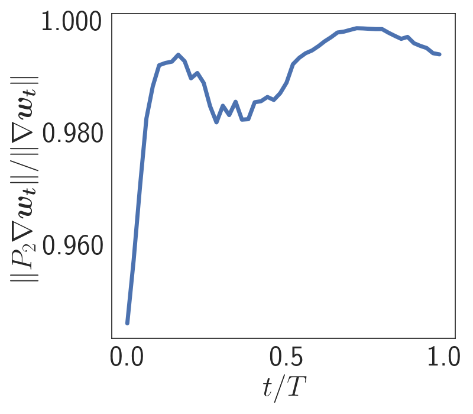
(a) \(E\)=50, \(B\)=50, \(T\)=50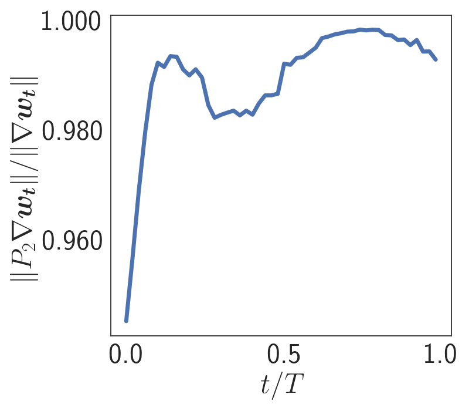
(b) \(E\)=25, \(B\)=25, \(T\)=50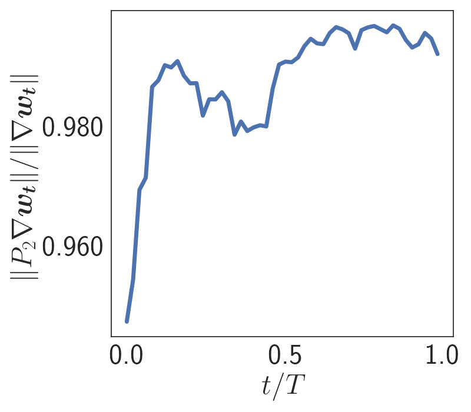
(c) \(E\)=10, \(B\)=10, \(T\)=50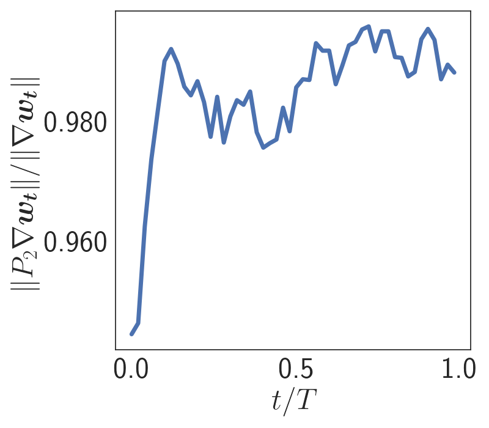
(d) \(E\)=5, \(B\)=5, \(T\)=50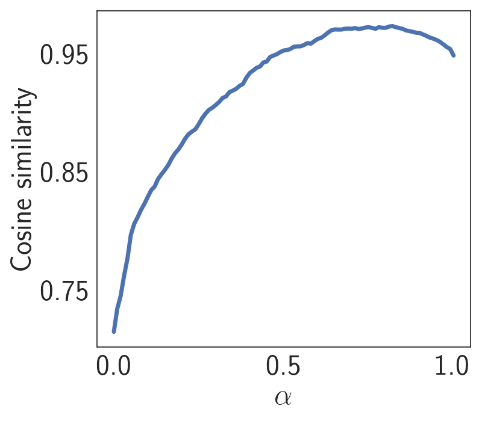
(a) \(E\)=50, \(B\)=50, \(T\)=50 (b) \(E\)=25, \(B\)=25, \(T\)=50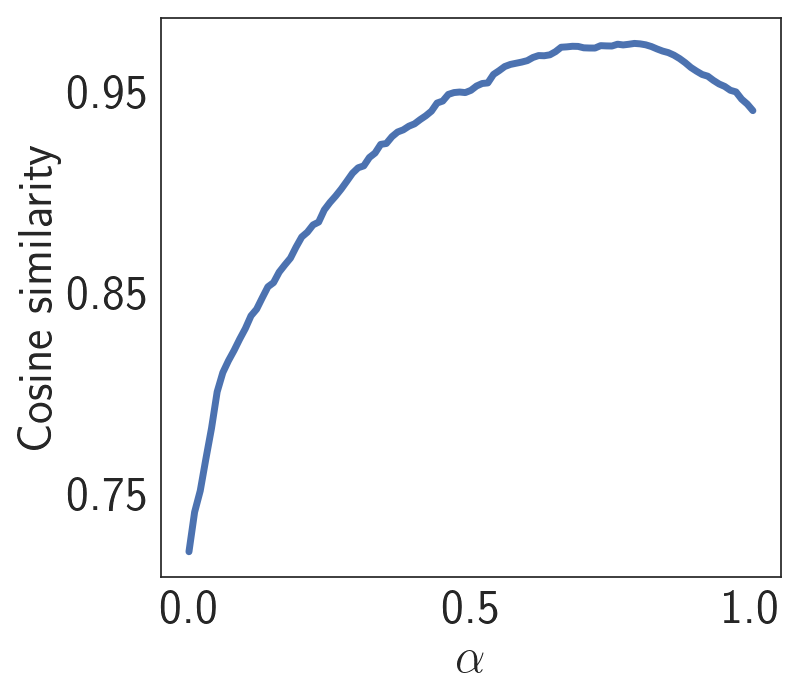
(c) \(E\)=10, \(B\)=10, \(T\)=50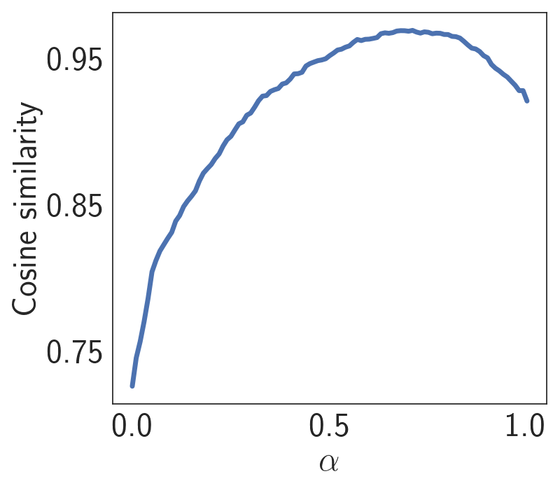
(d) \(E\)=5, \(B\)=5, \(T\)=50
| (E=50, B=50, T=50) | (E=25, B=25, T=50) | (E=10, B=10, T=50) | (E=5, B=5, T=50) | |
| ________________ | ________________ | ________________ | ______________ | |
| \(\maE [\min _t \frac {\|P_2\nabla \bm w_t\|}{\|\bm w_t\|}]\) | .977\(\pm \).009 | .978\(\pm \).007 | .977\(\pm \).008 | .973\(\pm \).009 |
| \(\maE [\Cosim |\alpha =0]\) | .867\(\pm \).041 | .869\(\pm \).049 | .872\(\pm \).037 | .876\(\pm \).041 |
| \(\maE [\max _{\alpha \in [0,1]}\Cosim ]\) | .980\(\pm \).007 | .978\(\pm \).026 | .979\(\pm \).007 | .977\(\pm \).008 |
Next, we investigate the influence of the network’s training state. During FL, the low-rank property of the gradients may change. Additionally, the loss reduction \(\ell (\w _0) - \ell (\w _T')\) is expected to be smaller as \(\ell (\w _0)\) decreases. To study this, we train a network with FL as described in Section D, and conduct attacks in a challenging setting with 50 steps of SGD. Figure 9 shows that as the communication round increases, the gradient norm ratio decreases, i.e. \(G_2\) becomes larger. Figure 10 shows that in the middle of the connected line, the surrogate gradient still has a higher cosine similarity. However, the highest cosine similarity that can be reached becomes smaller. Statistical evaluations of multiple samplings are presented in Table 5. We also provide the reconstruction performance on trained networks in Section F.
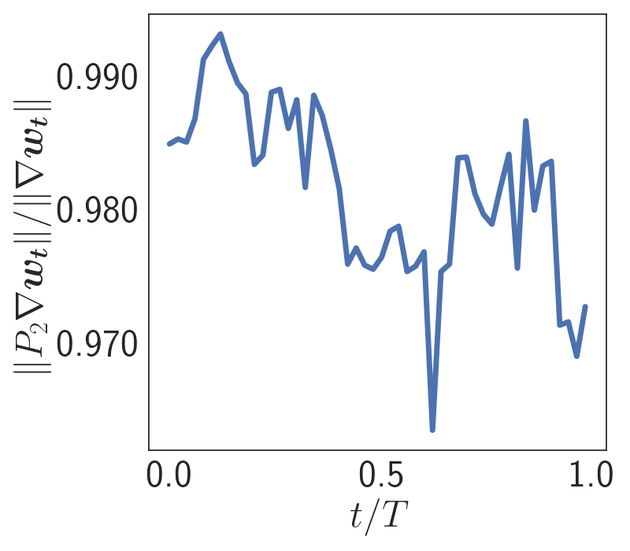
(a) \(E\)=10, \(B\)=10, \(R\)=1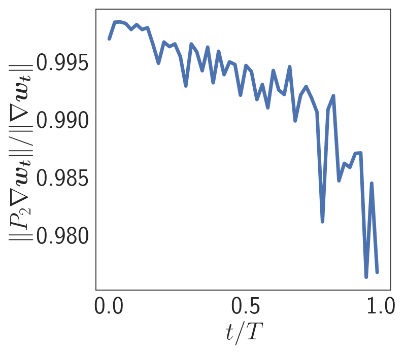
(b) \(E\)=10, \(B\)=10, \(R\)=5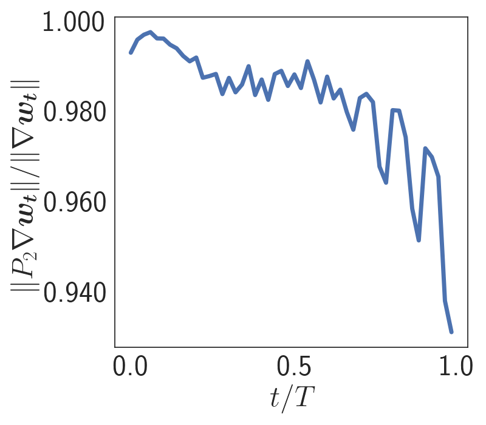
(c) \(E\)=10, \(B\)=10, \(R\)=10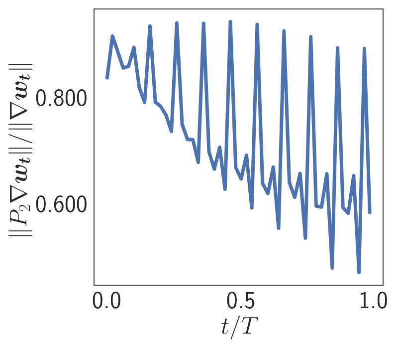
(d) \(E\)=10, \(B\)=10, \(R\)=20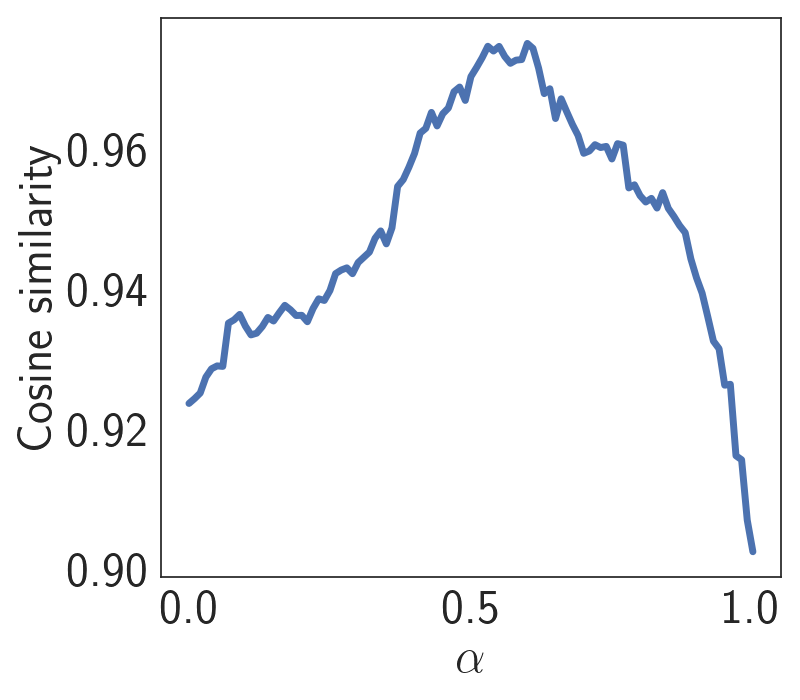
(a) \(E\)=10, \(B\)=10, \(R\)=1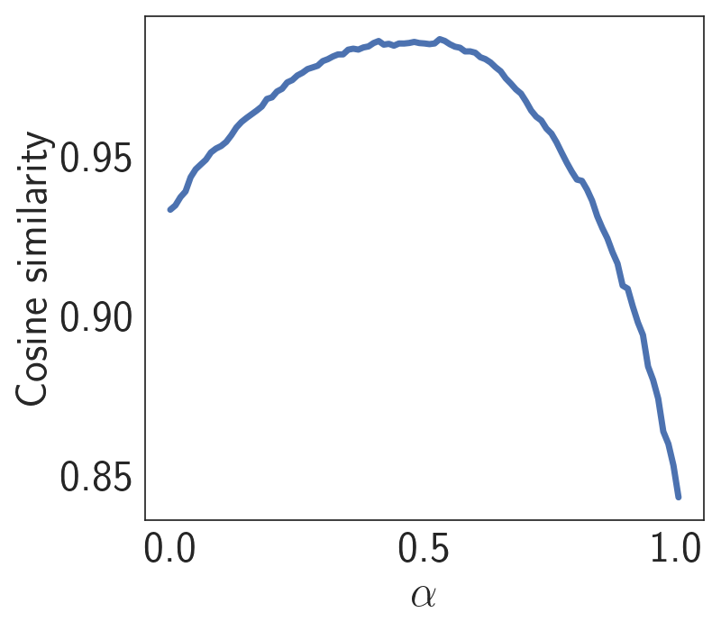
(b) \(E\)=10, \(B\)=10, \(R\)=5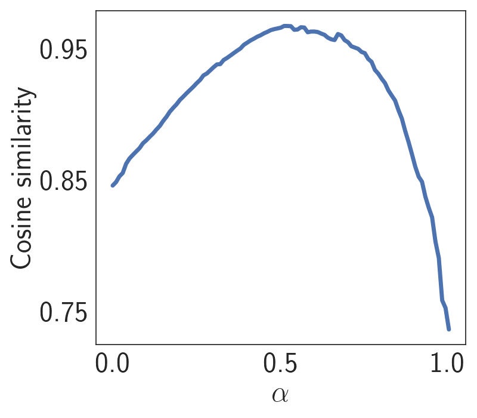
(c) \(E\)=10, \(B\)=10, \(R\)=10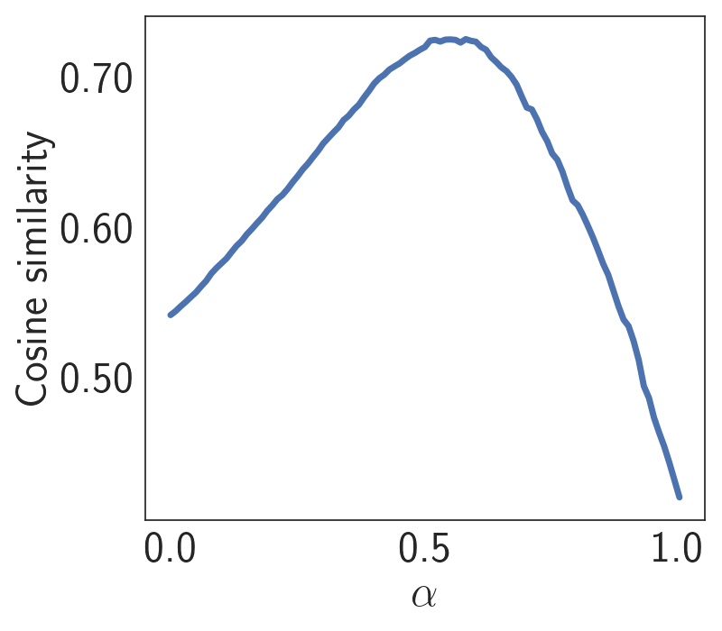
(d) \(E\)=10, \(B\)=10, \(R\)=20
| (E=10, B=10, R=1) | (E=10, B=10, R=5) | (E=10, B=10, R=10) | (E=10, B=10, R=20) | |
| _______________ | _______________ | ________________ | ________________ | |
| \(\maE [\min _t \frac {\|P_2\nabla \bm w_t\|}{\|\bm w_t\|}]\) | .977\(\pm \).008 | .937\(\pm \).036 | .813\(\pm \).087 | .406\(\pm \).176 |
| \(\maE [\Cosim |\alpha =0]\) | .872\(\pm \).004 | .871\(\pm \).044 | .764\(\pm \).061 | .542\(\pm \).074 |
| \(\maE [\max _{\alpha \in [0,1]}\Cosim ]\) | .979\(\pm \).007 | .962\(\pm \).019 | .902\(\pm \).052 | .602\(\pm \).010 |
F. Reconstruction
Performance
on
Trained
Networks
FHyperparameters for attack approaches.During FL, the low-rank property of gradients may be changed, also the loss reduction
of local training could be narrowed. Both of these could have a negative impact on the performance of SME according to our
Theorem 4.3 and Theorem 4.5. The empirical evidence provided in Section E reflects this phenomenon. As the number of
communication rounds grows, the gradients are less concentrated in a 2D subspace (see Figure 9), and the highest cosine similarity
achieved by the surrogate model also becomes smaller (see Figure 10).
In this section, we present the results of reconstruction performance w.r.t. the influence of the training state of \(\w _0\). We give the details
of FL in Section D. The attack results are shown in Table 6. As we can see, for larger communication round \(R\), the difference
of PSNR between SME and IG becomes smaller, but we note that SME still consistently outperforms IG. DLFA
performs better than SME when \(R\) is large. However, we emphasize that DLFA generally has a significantly higher
demand for computational resources as discussed in Section 5.3, it may not be able to execute DLFA under some
circumstances.
We also observe that the reconstruction performance of all attack approaches becomes worse as the number of communication
rounds \(R\) grows. Seemingly, clients joining FL after multiple rounds of communication would have better privacy. However, this also
leads to less contribution to the collaboration, which is an issue that needs to be considered in FL. We leave the study of the trade-off
between privacy and collaboration contribution for future work. Additionally, the results indicate that using a pre-trained network in
FL may be preferable not only in terms of network performance but also privacy. We also provide a visualization of the
reconstruction in Figure 13.
| DLFA | IG | SME (ours) | ||||||||
| __ | ________ | __ | ______ | __ | ________ | _______ | ||||
| \(R\) | \(E\) | \(N\) | \(T\) | \(\mathcal {L}_{sim}\downarrow \) | PSNR \(\uparrow \) | \(\mathcal {L}_{sim}\downarrow \) | PSNR \(\uparrow \) | \(\mathcal {L}_{sim}\downarrow \) | PSNR \(\uparrow \) | \(\bm \Delta \) PSNR |
|
1 | 10 | 10 | 10 | \(.021\pm .001\) | \(24.9\pm 0.2\) | \(.044\pm .002\) | \(27.8\pm 0.3\) | \(.019\pm .001\) | 30.3 \(\pm \) 0.3 | \(+2.5\) |
| 20 | 10 | 20 | \(.019\pm .001\) | \(25.4\pm 0.2\) | \(.090\pm .003\) | \(24.2\pm 0.3\) | \(.019\pm .001\) | 28.6 \(\pm \) 0.3 | \(+3.2\) | |
| 10 | 50 | 50 | \(.015\pm .001\) | \(21.7\pm 0.1\) | \(.091\pm .003\) | \(19.1\pm 0.2\) | \(.027\pm .001\) | 22.2 \(\pm \) 0.2 | \(+0.5\) | |
| 20 | 50 | 100 | \(.014\pm .001\) | 21.7 \(\pm \) 0.2 | \(.176\pm .011\) | \(17.0\pm 0.2\) | \(.037\pm .001\) | \(21.5\pm 0.2\) | \(-0.2\) | |
|
5 | 10 | 10 | 10 | \(.003\pm .000\) | \(22.1\pm 0.2\) | \(.026\pm .001\) | \(22.7\pm 0.3\) | \(.009\pm .001\) | 24.8 \(\pm \) 0.3 | \(+2.7\) |
| 20 | 10 | 20 | \(.003\pm .000\) | \(23.0\pm 0.1\) | \(.064\pm .003\) | \(20.9\pm 0.2\) | \(.018\pm .001\) | 24.7 \(\pm \) 0.3 | \(+1.7\) | |
| 10 | 50 | 50 | \(.005\pm .000\) | \(20.8\pm 0.2\) | \(.062\pm .004\) | \(18.7\pm 0.2\) | \(.020\pm .002\) | 21.4 \(\pm \) 0.3 | \(+0.6\) | |
| 20 | 50 | 100 | \(.005\pm .000\) | 20.9 \(\pm \) 0.2 | \(.131\pm .007\) | \(17.2\pm 0.2\) | \(.042\pm .003\) | \(20.3\pm 0.3\) | \(-0.6\) | |
|
10 | 10 | 10 | 10 | \(.003\pm .000\) | \(22.5\pm 0.1\) | \(.034\pm .001\) | \(21.4\pm 0.3\) | \(.011\pm .001\) | 23.8 \(\pm \) 0.3 | \(+1.3\) |
| 20 | 10 | 20 | \(.004\pm .000\) | \(23.1\pm 0.2\) | \(.079\pm .003\) | \(19.5\pm 0.2\) | \(.019\pm .001\) | 23.2 \(\pm \) 0.4 | \(+0.1\) | |
| 10 | 50 | 50 | \(.006\pm .000\) | 20.7 \(\pm \) 0.2 | \(.107\pm .016\) | \(17.7\pm 0.2\) | \(.027\pm .001\) | \(19.8\pm 0.3\) | \(-0.9\) | |
| 20 | 50 | 100 | \(.008\pm .000\) | 20.5 \(\pm \) 0.2 | \(.298\pm .035\) | \(16.7\pm 0.2\) | \(.060\pm .004\) | \(18.4\pm 0.3\) | \(-2.1\) | |
|
20 | 10 | 10 | 10 | \(.008\pm .001\) | 21.3 \(\pm \) 0.2 | \(.053\pm .002\) | \(19.0\pm 0.2\) | \(.019\pm .001\) | \(20.7\pm 0.3\) | \(-0.6\) |
| 20 | 10 | 20 | \(.013\pm .001\) | 20.8 \(\pm \) 0.2 | \(.109\pm .013\) | \(17.9\pm 0.2\) | \(.044\pm .003\) | \(19.6\pm 0.3\) | \(-1.2\) | |
| 10 | 50 | 50 | \(.020\pm .001\) | 19.4 \(\pm \) 0.2 | \(.208\pm .003\) | \(16.2\pm 0.2\) | \(.152\pm .030\) | \(17.3\pm 0.2\) | \(-2.1\) | |
| 20 | 50 | 100 | \(.020\pm .001\) | 19.0 \(\pm \) 0.2 | \(.374\pm .043\) | \(15.4\pm 0.2\) | \(.306\pm .043\) | \(16.2\pm 0.2\) | \(-2.8\) | |
G. Reconstruction
Performance
on
other
Network
Architectures
GHyperparameters for attack approaches.We provide the reconstruction performance results on other network architectures. In
particular, we consider: (1) A MLP with two hidden layers of shape \((1000, 1000)\) equipped with ReLU activation function. (2) A LeNet (Lecun
et al., 1998) equipped with Tanh activation function. (3) ResNet (He et al., 2016), a convolutional neural network with
skip connections. In particular, we adopt a relatively small ResNet8 with three building blocks in favor of DLFA
and follow Geiping et al. (2020) to freeze the running statistics of the batch normalization layers during training.
Updating the running statistics might disable reconstruction as reported by Huang et al. (2021). (4) ViT (Dosovitskiy
et al., 2021), a non-convolutional network with multi-head attention building blocks and layer normalization. We follow Lu
et al. (2021) and adopt the architecture of type A. We set the learning rate in FL to 0.4 for LeNet and 0.004 for the other
architectures. All attack approaches adopt the hyperparameters described in Section D. The results are given in
Table 7.
As we can see, in general SME achieves the best performance in terms of reconstruction. DLFA, on the other hand, fails
in the attacks of LeNet and ResNet8. We also notice that DLFA works when the learning rate of LeNet is lower.
However, when we increase the learning rate to 0.4, the reconstruction of DLFA converges in the first few iterations
and then diverges dramatically (we record the best PSNR during reconstruction). This may indicate that DLFA is
prone to failure or sensitive to configuration, while the gradient inversion methods are more robust on different
architectures.
| DLFA | IG | SME (ours) | ||||||||
| _____ | ________ | __ | ______ | __ | ________ | _______ | ||||
| Network | \(E\) | \(N\) | \(T\) | \(\mathcal {L}_{sim}\downarrow \) | PSNR \(\uparrow \) | \(\mathcal {L}_{sim}\downarrow \) | PSNR \(\uparrow \) | \(\mathcal {L}_{sim}\downarrow \) | PSNR \(\uparrow \) | \(\bm \Delta \) PSNR |
|
MLP | 10 | 10 | 10 | \(.018\pm .000\) | 36.0 \(\pm \) 0.3 | \(.043\pm .006\) | \(31.7\pm 0.3\) | \(.009\pm .000\) | \(35.9\pm 0.4\) | \(-0.1\) |
| 20 | 10 | 20 | \(.025\pm .000\) | \(31.3\pm 0.2\) | \(.041\pm .002\) | \(29.5\pm 0.3\) | \(.013\pm .000\) | 34.1 \(\pm \) 0.4 | \(+2.8\) | |
| 50 | 10 | 50 | \(.051\pm .001\) | \(28.0\pm 0.2\) | \(.097\pm .002\) | \(25.1\pm 0.3\) | \(.023\pm .001\) | 30.1 \(\pm \) 0.3 | \(+2.1\) | |
| 10 | 50 | 50 | \(.030\pm .001\) | \(27.0\pm 0.2\) | \(.056\pm .002\) | \(25.1\pm 0.3\) | \(.009\pm .000\) | 31.4 \(\pm \) 0.3 | \(+4.4\) | |
| 20 | 50 | 100 | \(.039\pm .001\) | \(24.6\pm 0.2\) | \(.090\pm .002\) | \(23.3\pm 0.3\) | \(.017\pm .001\) | 28.5 \(\pm \) 0.3 | \(+3.9\) | |
| 50 | 50 | 250 | \(.058\pm .002\) | \(22.0\pm 0.2\) | \(.173\pm .003\) | \(20.6\pm 0.2\) | \(.054\pm .001\) | 22.8 \(\pm \) 0.3 | \(+0.8\) | |
|
LeNet | 10 | 10 | 10 | \(.315\pm .022\) | \(16.3\pm 0.1\) | \(.000\pm .000\) | \(29.1\pm 0.3\) | \(.000\pm .000\) | 29.5 \(\pm \) 0.3 | \(+0.4\) |
| 20 | 10 | 20 | \(.555\pm .016\) | \(16.0\pm 0.1\) | \(.002\pm .000\) | \(27.8\pm 0.3\) | \(.000\pm .000\) | 29.4 \(\pm \) 0.3 | \(+1.6\) | |
| 50 | 10 | 50 | \(.690\pm .040\) | \(16.1\pm 0.1\) | \(.015\pm .002\) | \(23.0\pm 0.3\) | \(.000\pm .000\) | 29.0 \(\pm \) 0.3 | \(+6.0\) | |
| 10 | 50 | 50 | \(.663\pm .012\) | \(15.9\pm 0.1\) | \(.003\pm .000\) | \(23.0\pm 0.4\) | \(.000\pm .000\) | 24.6 \(\pm \) 0.3 | \(+1.6\) | |
| 20 | 50 | 100 | \(.553\pm .023\) | \(16.1\pm 0.1\) | \(.017\pm .002\) | \(19.8\pm 0.4\) | \(.000\pm .000\) | 24.2 \(\pm \) 0.3 | \(+4.4\) | |
| 50 | 50 | 250 | \(.690\pm .040\) | \(16.4\pm 0.2\) | \(.159\pm .010\) | \(15.0\pm 0.2\) | \(.019\pm .002\) | 19.4 \(\pm \) 0.5 | \(+3.0\) | |
|
ResNet8 | 10 | 10 | 10 | \(.148\pm .009\) | \(16.5\pm 0.1\) | \(.004\pm .000\) | \(32.7\pm 0.5\) | \(.001\pm .000\) | 36.8 \(\pm \) 0.5 | \(+4.1\) |
| 20 | 10 | 20 | \(.163\pm .011\) | \(16.3\pm 0.1\) | \(.011\pm .000\) | \(26.7\pm 0.4\) | \(.001\pm .000\) | 36.6 \(\pm \) 0.5 | \(+9.9\) | |
| 50 | 10 | 50 | \(.125\pm .010\) | \(16.2\pm 0.2\) | \(.059\pm .003\) | \(18.4\pm 0.3\) | \(.001\pm .000\) | 33.2 \(\pm \) 0.5 | \(+14.8\) | |
| 10 | 50 | 50 | \(.114\pm .001\) | \(15.9\pm 0.1\) | \(.015\pm .001\) | \(21.2\pm 0.5\) | \(.002\pm .000\) | 28.2 \(\pm \) 0.5 | \(+7.0\) | |
| 20 | 50 | 100 | \(.116\pm .005\) | \(16.1\pm 0.2\) | \(.061\pm .004\) | \(17.1\pm 0.4\) | \(.002\pm .000\) | 27.3 \(\pm \) 0.6 | \(+10.2\) | |
| 50 | 50 | 250 | \(.206\pm .007\) | \(16.2\pm 0.2\) | \(.163\pm .006\) | \(14.0\pm 0.1\) | \(.028\pm .003\) | 20.8 \(\pm \) 0.6 | \(+4.6\) | |
|
ViT | 10 | 10 | 10 | \(.008\pm .001\) | \(25.6\pm 0.5\) | \(.037\pm .001\) | \(25.1\pm 0.2\) | \(.012\pm .000\) | 30.3 \(\pm \) 0.2 | \(+4.7\) |
| 20 | 10 | 20 | \(.007\pm .000\) | \(21.1\pm 0.2\) | \(.079\pm .001\) | \(21.1\pm 0.1\) | \(.028\pm .000\) | 26.4 \(\pm \) 0.2 | \(+5.3\) | |
| 50 | 10 | 50 | \(.013\pm .004\) | \(18.9 \pm 0.1\) | \(.138\pm .001\) | \(17.7\pm 0.1\) | \(.053\pm .001\) | 21.3 \(\pm \) 0.1 | \(+1.4\) | |
| 10 | 50 | 50 | \(.017\pm .009\) | \(20.6\pm 0.2\) | \(.067\pm .002\) | \(19.1\pm 0.2\) | \(.022\pm .001\) | 23.3 \(\pm \) 0.3 | \(+2.7\) | |
| 20 | 50 | 100 | \(.015\pm .004\) | \(18.3\pm 0.1\) | \(.114\pm .002\) | \(16.8\pm 0.1\) | \(.044\pm .001\) | 20.0 \(\pm \) 0.1 | \(+1.7\) | |
| 50 | 50 | 250 | N/A | N/A | \(.157\pm .001\) | \(14.9\pm 0.1\) | \(.070\pm .002\) | 17.2 \(\pm \) 0.1 | N/A | |
H. Reconstruction Visualization HHyperparameters for attack approaches.
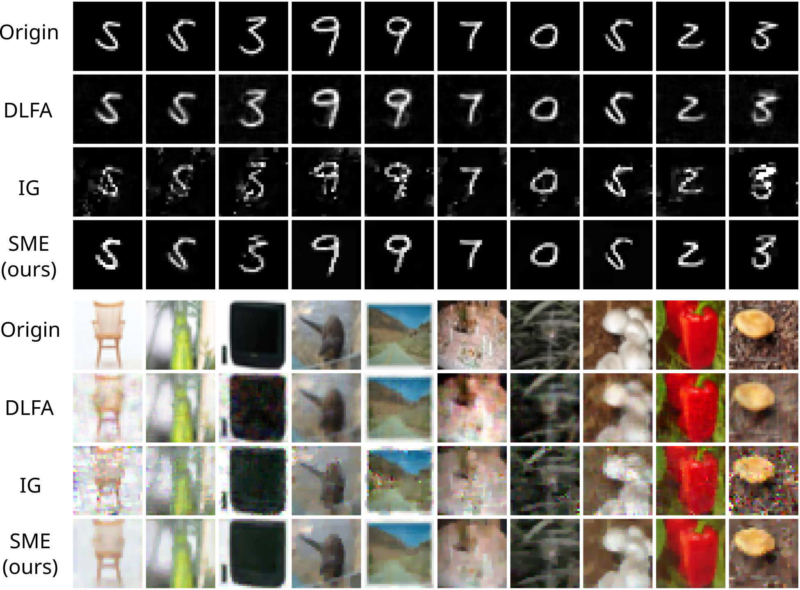
(a) \(E\)=20, \(B\)=10, \(T\)=20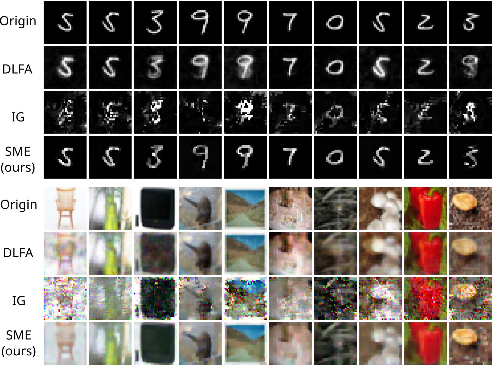
(b) \(E\)=50, \(B\)=10, \(T\)=50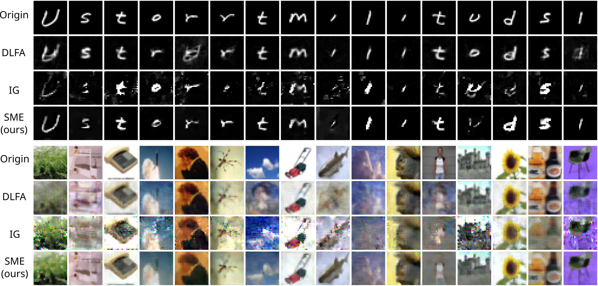
(a) \(E\)=10, \(B\)=10, \(T\)=50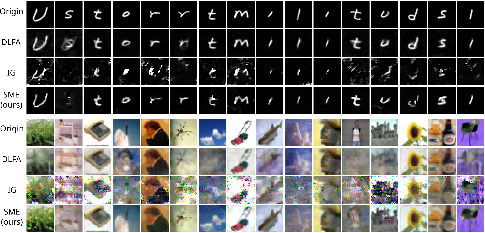
(b) \(E\)=20, \(B\)=10, \(T\)=100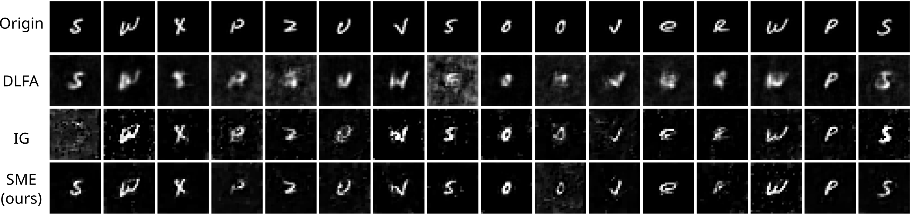
(a) \(E\)=10, \(N\)=50, \(R\)=1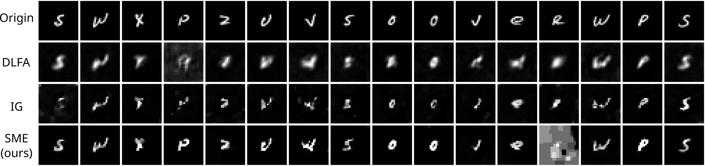
(b) \(E\)=10, \(N\)=50, \(R\)=5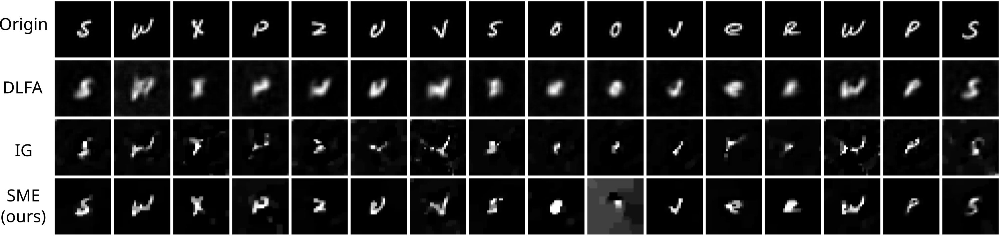
(c) \(E\)=10, \(N\)=50, \(R\)=10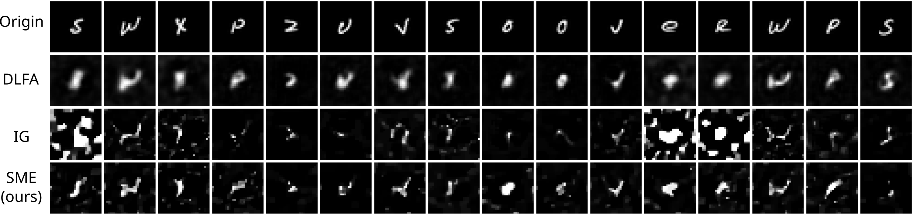
(d) \(E\)=10, \(N\)=50, \(R\)=20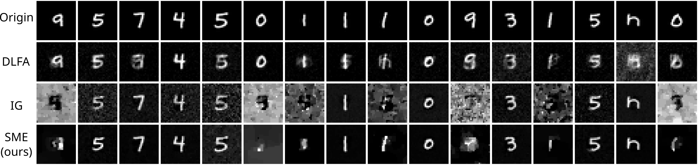
(a) MLP, \(E\)=20, \(N\)=50, \(T=100\)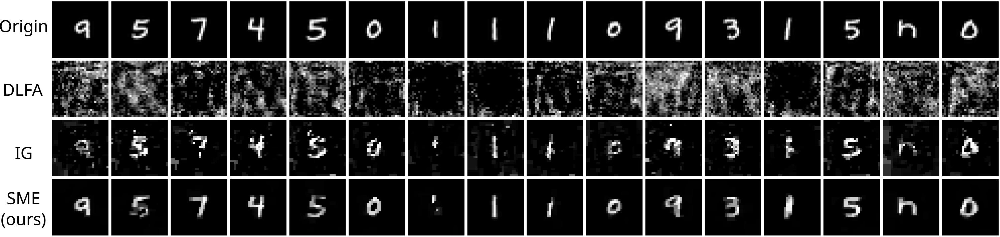
(b) LeNet, \(E\)=20, \(N\)=50, \(T=100\)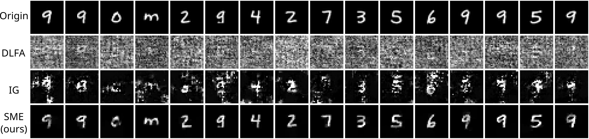
(c) ResNet8, \(E\)=20, \(N\)=50, \(T=100\)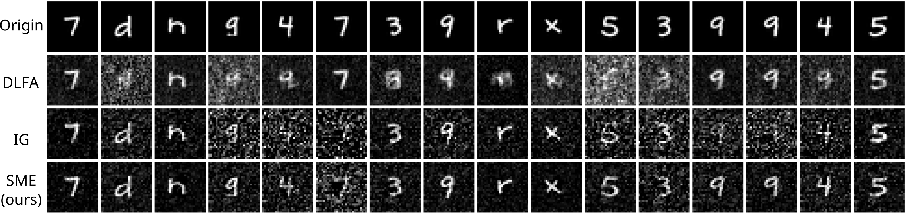
(d) ViT, \(E\)=20, \(N\)=50, \(T=100\)